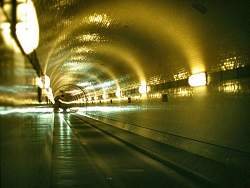

| In Deutsch |
| In Deutsch |
Tunnels
|  |
|---|
| Image: Inside the Old Elbtunel, Germany. |
{kind=link}
 |
| Image: Der Goeta-Canal in Schweden. Historic engraving from a German enzyclopedia named Meyers Universum, published by Carl Joseph Meyer. By nn in ca 1850, 15x10cm. |
Tunnels are an easy way to avoid high pitches and rivers. They are used for several kinds of surface transport.
- Railroad tunnels:
Railroads are not able to climb high pitches so the necessity to build railroad tunnels arose early after the invention of the railroad in the 19th century. Many railroad tunnels were built during the 19th century all over the world, but most of them in Europe. - Raceway tunnels:
Water tunnels were important for canals which were not able to climb any slope without floodgates. So sometimes it was much easier to build a tunnel, instead of maintaining a huge number of floodgates. Raceway tunnels were used for draining, for canals and for water supply. Many of them have a connection to mining history. - Canal tunnels:
Obviously canals are always horizontal, the only way to climb a mountainside are locks. Locks are time consuming, expensive, need energy (even if powered by the water from the canal). So the constructors of canals tried to avoid a lot of locks by constructing tunnels through the hills. Those tunnels are a typical Victorian construction, connected with early industrialization, as the canals were of great importance for the transport of coal and ores. Most canal tunnels exist in Great Britain, some more in France, but other European have only very few (Germany: 1). Outside of Europe they are almost unknown.
In contrary to raceway tunnels, those tunnels are used for navigation and thus they are also called Navigation Canal Tunnels. - Road tunnels:
Later, in the 20th century road tunnels became much more important. Today the number of road tunnels worldwide is enormous. But as they typically are no tourist sights, there are only a few extraordinary road tunnels listed on showcaves.com.
The tunnels once were built using techniques known from mining. Miners dug the tunnels like they built their mine adits before. The earliest tunnels were built using various shafts along a line and staring into both direcions at the sole. This technique is used until today, the new Gotthard tunnel is built this way at the moment [2007]. But modern technology also provides new techniques for the construction of road tunnels. Huge drilling machines drill into the rocks, transport the material away, use some of the rocks and additional material like cement to produce concrete, support the ceiling with a hydraulic system which also forms the mould for the concrete. Such tunneling machines are somtimes a hundred meters long and at their end the tunnel is almost complete. They produce the tunnel while moving forward.
- Examples
 Alter Elbtunnel (Old Elbe Tunnel)
Alter Elbtunnel (Old Elbe Tunnel)- Dudley Canal Tunnels
- Lockport Cave Raceway Tour
- Netherton Tunnel Branch Canal
- Standedge Tunnel
- Kanaltunnel Weilburg
- See also
 The World's longest tunnel page
(
The World's longest tunnel page
(


 )
)- Tunnels in the USA and Canada
- Longest Canal Tunnels in England, UK - length of canal tunnel, navigable or disused
- Canal Tunnels of London
- Canal Engineering Tunnels
- SIA-Fachgruppe für Untertagbau,
Tunnels in Switzerland.
(
 )
) - Norwegian Tunnelling Society (NFF)
- tunnelbuilder.com - marketing resources for the world's tunnelling industry,
contains also a list of historic tunneling records.
- Studiengesellschaft für unterirdische Verkehrsanlagen e.V.
()
- The Tunnel Link Page 9, edited by Gunnar Lotsberg